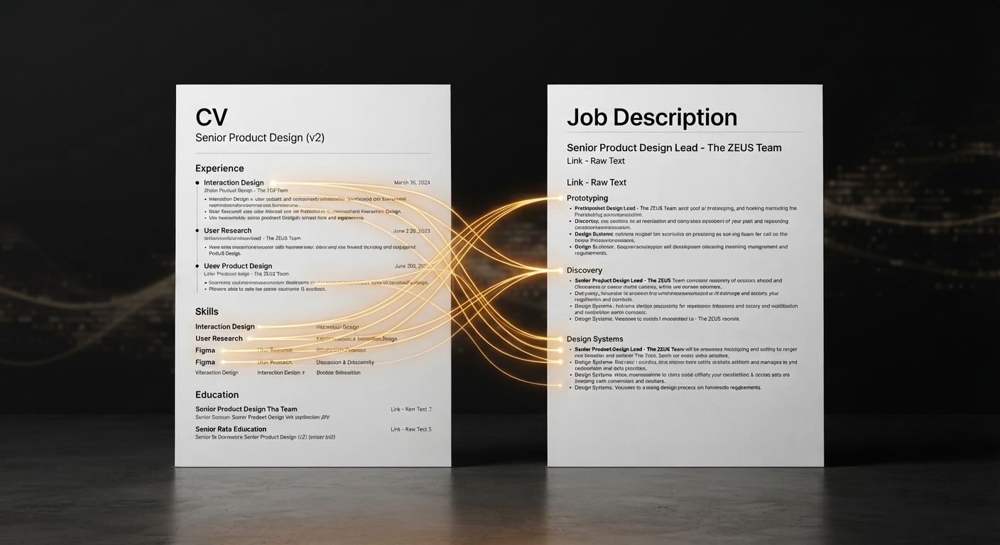

On Paper compares your CV with a job description and shows how well the two line up, so you can tailor your application before you send it.
Try On Paper ➜Every job posting is a wish list, and every CV is a slightly different version of you. On Paper sits between the two. Paste in your CV and the job description, and it reads them side by side to show where you already match and where the gaps are.
The goal is not to game the system. It is to help you see your own application the way a recruiter might, so you can decide what to emphasize, what to add, and whether the role is worth your time at all.

See how you match.
Try On Paper ➜